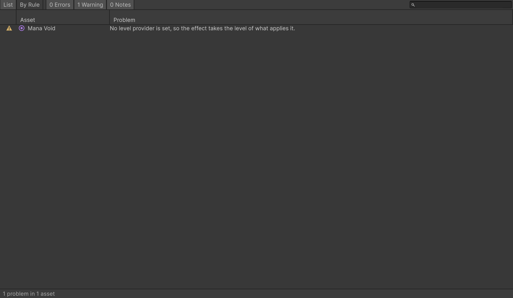
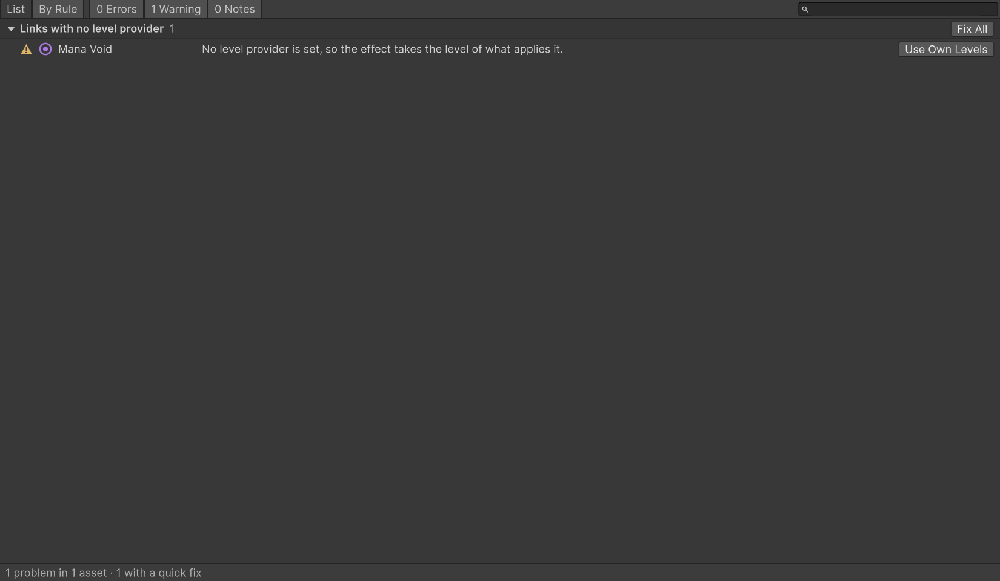

The Problems view
The Problems view (ForgeProblemsWindow) lists what the validator finds. It follows the validator, so it has no Refresh.

The Problems view, listing each problem by asset.
Opening the view
| From | Opens |
|---|---|
| Window → PlayForge → Problems | The view. |
| The Forge's problem count, or its window menu | The view. |
| An inspector header's problem count | The view, searching for that asset. |
In code, ForgeProblemsWindow.ShowWindow() opens the view, and ForgeProblemsWindow.ShowFor(asset) opens it on an
asset.
Toolbar
| Control | What it does |
|---|---|
| List, By Rule | Switch between the view's two views. |
| Errors, Warnings, Notes | Each is a filter that counts its problems, such as 2 Errors. |
| Search | Finds a problem by its asset or its words. |
List view
List has a row for each problem: the errors first and the notes last, then by asset. A row shows its severity, its asset by type icon and name, and what's wrong. The columns sort.
| Action | Result |
|---|---|
| Click | Selects the asset and shows it in the Project window. |
| Double-click | Opens the asset in a window of its own. |
By Rule view
By Rule groups the problems under the rule each breaks, a rule with errors first. A rule's arrow folds it.

The Problems view, By Rule.
A problem that one step fixes has a quick fix: a button named for the step, such as Store the Tag. Its rule has Fix All, or Fix 2 where only two of its problems have one. Each is one Undo step.
Status bar
The status bar says how many problems there are, in how many assets, and the notes beside them. It also says how many are shown, and, in By Rule, how many have a quick fix.